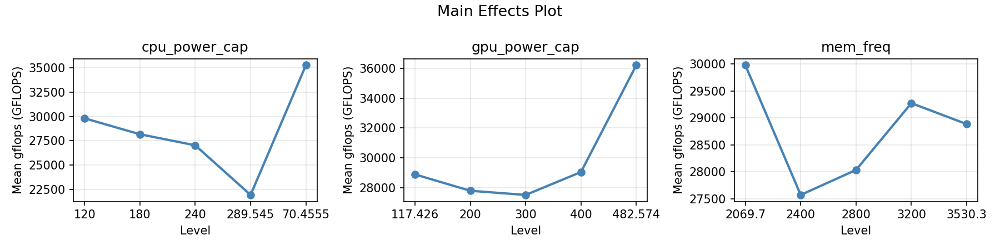
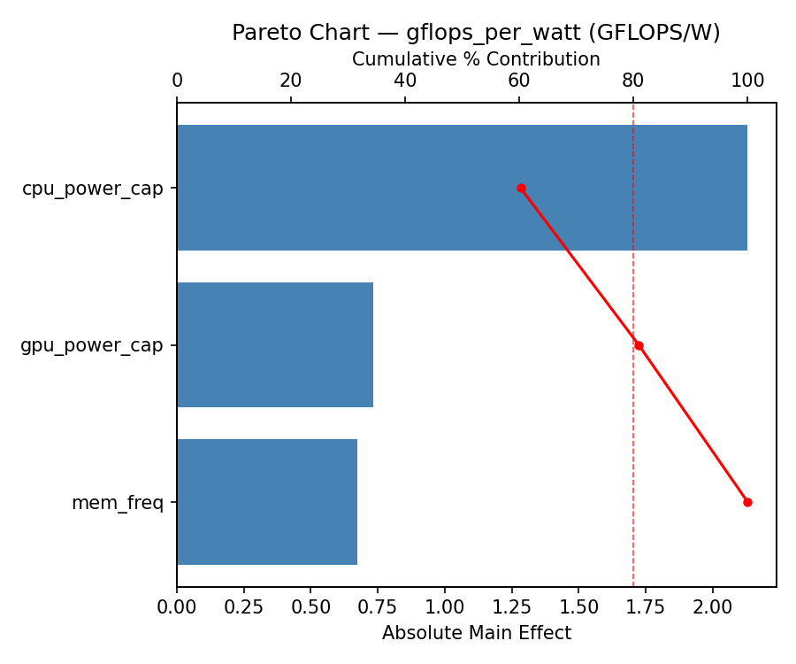
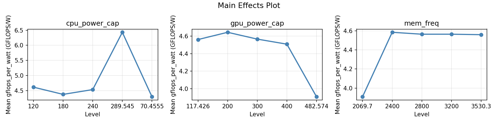
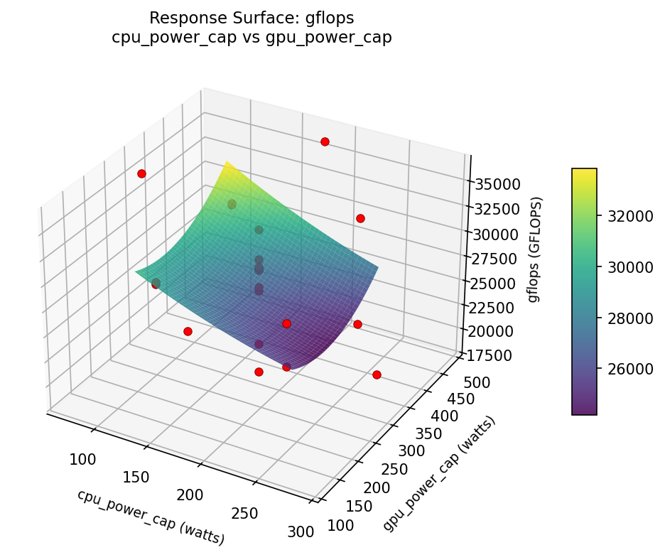
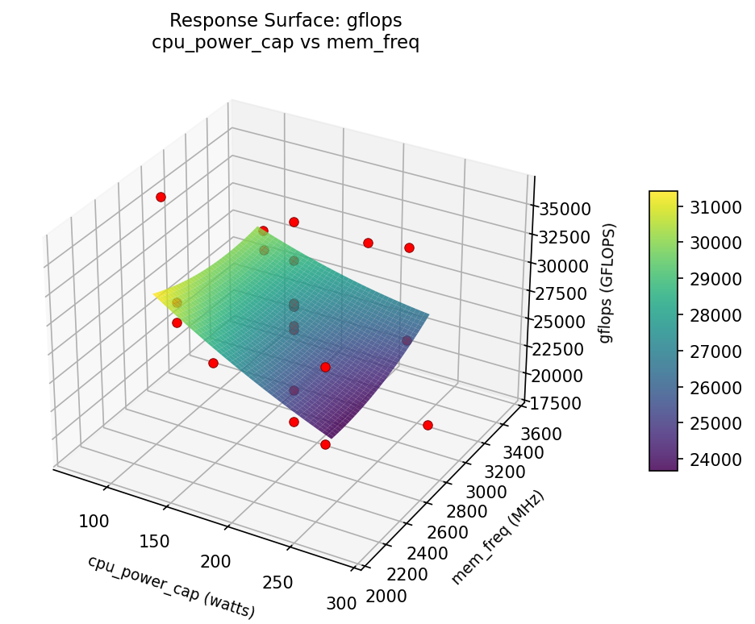
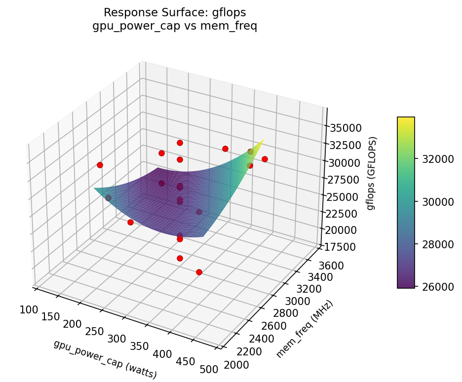
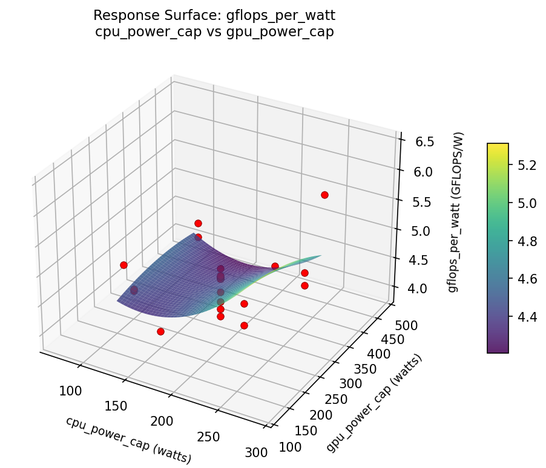
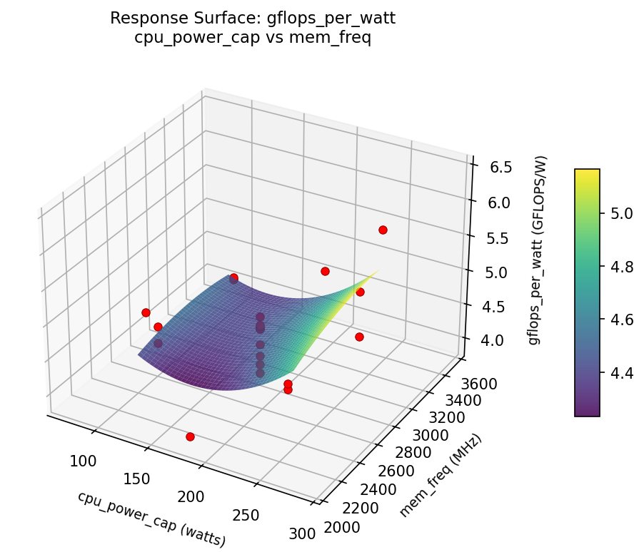
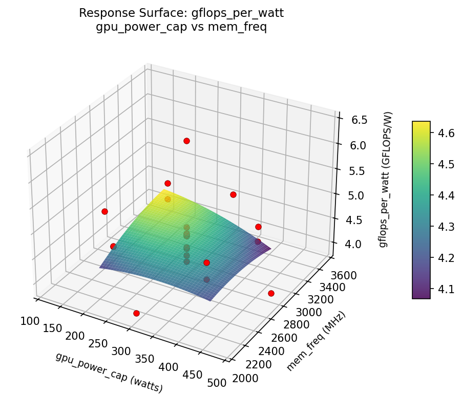

Experimental Setup
Factors
| Factor | Levels | Type | Unit |
|---|---|---|---|
cpu_power_cap | 120, 240 | continuous | watts |
gpu_power_cap | 200, 400 | continuous | watts |
mem_freq | 2400, 3200 | continuous | MHz |
Fixed: cpu_model = EPYC 9654, gpu_model = H100 SXM, nodes = 4, workload = HPL
Responses
| Response | Direction | Unit |
|---|---|---|
gflops | ↑ maximize | GFLOPS |
gflops_per_watt | ↑ maximize | GFLOPS/W |
Experimental Matrix
The Central Composite Design produces 22 runs. Each row is one experiment with specific factor settings.
| Run | cpu_power_cap | gpu_power_cap | mem_freq |
|---|---|---|---|
| 1 | 180 | 300 | 2800 |
| 2 | 240 | 200 | 3200 |
| 3 | 120 | 400 | 2400 |
| 4 | 180 | 482.574 | 2800 |
| 5 | 180 | 300 | 2800 |
| 6 | 70.4555 | 300 | 2800 |
| 7 | 180 | 300 | 2069.7 |
| 8 | 180 | 300 | 2800 |
| 9 | 240 | 400 | 2400 |
| 10 | 289.545 | 300 | 2800 |
| 11 | 180 | 300 | 2800 |
| 12 | 180 | 117.426 | 2800 |
| 13 | 180 | 300 | 2800 |
| 14 | 120 | 200 | 3200 |
| 15 | 180 | 300 | 2800 |
| 16 | 240 | 200 | 2400 |
| 17 | 180 | 300 | 3530.3 |
| 18 | 240 | 400 | 3200 |
| 19 | 180 | 300 | 2800 |
| 20 | 120 | 200 | 2400 |
| 21 | 120 | 400 | 3200 |
| 22 | 180 | 300 | 2800 |
How to Run
terminal
$ python doe.py info --config use_cases/20_power_performance_tradeoff/config.json
$ python doe.py generate --config use_cases/20_power_performance_tradeoff/config.json --output results/run.sh --seed 42
$ bash results/run.sh
$ python doe.py analyze --config use_cases/20_power_performance_tradeoff/config.json
$ python doe.py optimize --config use_cases/20_power_performance_tradeoff/config.json
$ python doe.py report --config use_cases/20_power_performance_tradeoff/config.json --output report.html
Analysis Results
Generated from actual experiment runs.
Response: gflops
Pareto Chart

Main Effects Plot

Response: gflops_per_watt
Pareto Chart

Main Effects Plot

Response Surface Plots
3D surfaces fitted with quadratic RSM. Red dots are observed data points.
gflops: cpu_power_cap vs gpu_power_cap

gflops: cpu_power_cap vs mem_freq

gflops: gpu_power_cap vs mem_freq

gflops_per_watt: cpu_power_cap vs gpu_power_cap

gflops_per_watt: cpu_power_cap vs mem_freq

gflops_per_watt: gpu_power_cap vs mem_freq

Full Analysis Output
doe analyze
=== Main Effects: gflops ===
Factor Effect Std Error % Contribution
--------------------------------------------------------------
mem_freq 9830.0426 941.2533 37.7%
cpu_power_cap 9512.7721 941.2533 36.5%
gpu_power_cap 6752.3303 941.2533 25.9%
=== Summary Statistics: gflops ===
cpu_power_cap:
Level N Mean Std Min Max
------------------------------------------------------------
120 4 28006.1565 4796.7450 21420.2670 32932.7236
180 12 28606.7494 3974.4246 21937.7693 36207.2146
240 4 25759.7279 5479.9237 18559.2406 30764.8843
gpu_power_cap:
Level N Mean Std Min Max
------------------------------------------------------------
200 4 26004.7178 3721.1495 21420.2670 29179.0677
300 12 28997.3896 4224.0706 21937.7693 36207.2146
400 4 27761.1666 6363.8766 18559.2406 32932.7236
mem_freq:
Level N Mean Std Min Max
------------------------------------------------------------
2400 4 26377.1720 4204.1681 21420.2670 30764.8843
2800 12 28683.5668 3795.8216 21937.7693 35272.5000
3200 4 27388.7124 6168.0992 18559.2406 32932.7236
=== Main Effects: gflops_per_watt ===
Factor Effect Std Error % Contribution
--------------------------------------------------------------
mem_freq 0.7675 0.1061 50.9%
gpu_power_cap 0.4600 0.1061 30.5%
cpu_power_cap 0.2800 0.1061 18.6%
=== Summary Statistics: gflops_per_watt ===
cpu_power_cap:
Level N Mean Std Min Max
------------------------------------------------------------
120 4 4.4675 0.2975 4.0400 4.7300
180 12 4.5742 0.6438 3.9100 6.4300
240 4 4.5525 0.3046 4.1600 4.9000
gpu_power_cap:
Level N Mean Std Min Max
------------------------------------------------------------
200 4 4.7000 0.1512 4.5600 4.9000
300 12 4.5808 0.6411 3.9100 6.4300
400 4 4.3200 0.2587 4.0400 4.5400
mem_freq:
Level N Mean Std Min Max
------------------------------------------------------------
2400 4 4.6775 0.1733 4.5400 4.9000
2800 12 4.6275 0.6104 3.9100 6.4300
3200 4 4.3425 0.2850 4.0400 4.6100
Optimization Recommendations
doe optimize
=== Optimization: gflops ===
Direction: maximize
Best observed run: #4
cpu_power_cap = 240
gpu_power_cap = 200
mem_freq = 3200
Value: 36207.2146
Factor importance:
1. cpu_power_cap (effect: 10795.5, contribution: 44.6%)
2. gpu_power_cap (effect: 8215.3, contribution: 34.0%)
3. mem_freq (effect: 5170.7, contribution: 21.4%)
=== Optimization: gflops_per_watt ===
Direction: maximize
Best observed run: #12
cpu_power_cap = 180
gpu_power_cap = 300
mem_freq = 2800
Value: 6.43
Factor importance:
1. mem_freq (effect: 0.6, contribution: 42.3%)
2. cpu_power_cap (effect: 0.5, contribution: 35.3%)
3. gpu_power_cap (effect: 0.3, contribution: 22.4%)